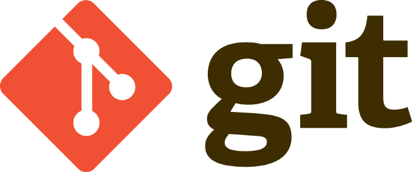

Git & GitHub
Welcome to our OVI about Git & Github.
Welcome to our OVI about Git & Github.
Git es un software de control de versiones diseñado por Linus Torvalds, pensando en la eficiencia y la confiabilidad del mantenimiento de versiones de aplicaciones cuando éstas tienen un gran número de archivos de código fuente. Su propósito es llevar registro de los cambios en archivos de computadora y coordinar el trabajo que varias personas realizan sobre archivos compartidos.
Lamentablemente, son muchas las ocasiones en que echamos en falta las cosas cuando ya es demasiado tarde. Por ejemplo, ese momento en el que cunde el pánico porque toda nuestra información se ha borrado y no habíamos realizado copias de seguridad. O cuando modificas el código fuente de tu página web pero, cuando pasado un tiempo intentas saber qué fue lo que cambiaste y ya no lo recuerdas Git puede ahorrarte más de un disgusto. Si alguna vez has sufrido alguna de estas situaciones, debes saber que existen herramientas para evitar cualquier susto de este tipo llamadas software de control de versiones. Con estos sistemas, todos los cambios que se realicen en cualquiera de los elementos de un sitio web o en su configuración quedan registrados. Una de las más utilizadas, y que ha supuesto toda una revolución en el mundo del desarrollo web y la administración de sistemas informáticos, es Git.
1. Crea un “repositorio” (proyecto) con una herramienta de alojamiento de git (como Bitbucket).
2. Copia (o clona) el repositorio en tu equipo local.
3. Añade un archivo en tu repositorio local y “confirma” (guarda) los cambios.
4. “Envía” tus cambios a la rama maestra.
5. Realiza un cambio en tu archivo con una herramienta de alojamiento de git y confírmalo.
6. “Incorpora” los cambios en tu equipo local.
7. Crea una “rama” (versión), haz un cambio y confírmalo.
8. Abre una “solicitud de incorporación de cambios” (propón cambios en la rama maestra).
9. “Fusiona” tu rama con la rama maestra.
¿Por qué necesitas usar Git en tus proyectos web?. (2020). Retrieved 29 October 2020, from https://linube.com/blog/necesitas-git-proyecto/
Aprende a usar Git - Tutoriales, flujos de trabajo y comandos de Git. (2020). Retrieved 29 October 2020, from https://www.atlassian.com/es/git
Git. (2020). Retrieved 29 October 2020, from https://es.wikipedia.org/wiki/Git